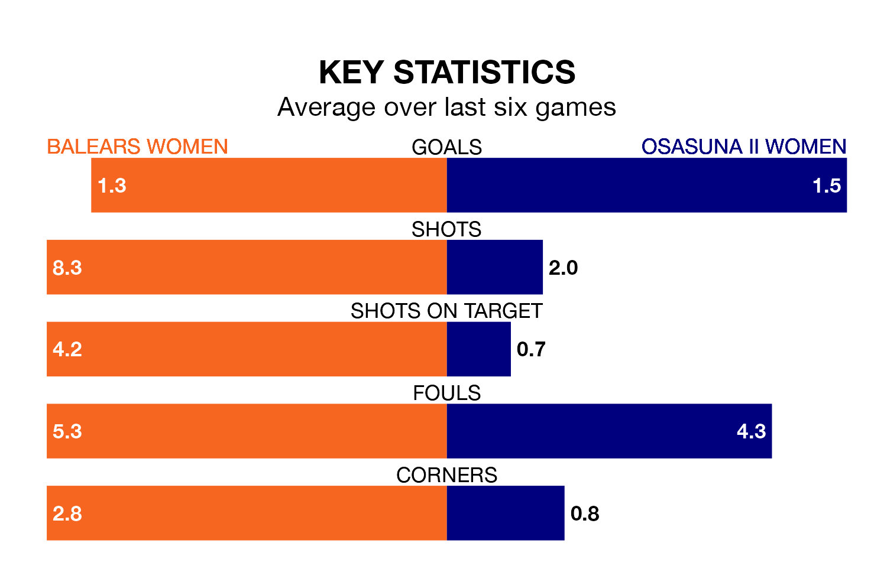

Two of the Segunda Federación Femenina's top sides face each other in Sunday's early kick-off, when fourth-placed Balears Women host zero-placed Osasuna II Women.
Balears have picked up 16 wins and four draws from 24 games so far this season, and sit 30 points above the visitors going into the 11am match.
Osasuna II, meanwhile, have won five and drawn seven, picking up 22 points.
With 45 goals in 24 games so far this season, Balears are the league's second-highest scorers with 1.9 goals per game. And they are conceding fewer than average, letting in 23 goals at a rate of 1.0 per game.
Osasuna II, meanwhile, are below average scorers, with 1.2 goals per game, compared to a league average of 1.3. They have conceded 1.9 goals per game.
The home team are in good form in the Segunda Federación Femenina, with four wins and two draws from their last six games.
With two wins and two draws over that period, the visitors' form is much worse – they have taken eight points from 18, compared to Balears's 14.
Balears's last match was on March 17, a 2-1 win against Bizkerre Women, with getting the goals for Balears.
Osasuna II beat Athletic Club III Women 3-0 last time out, also on March 17, with on the scoresheet.
Updated: 10:19 (UTC), 22/03/24